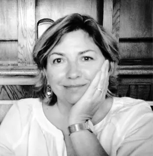
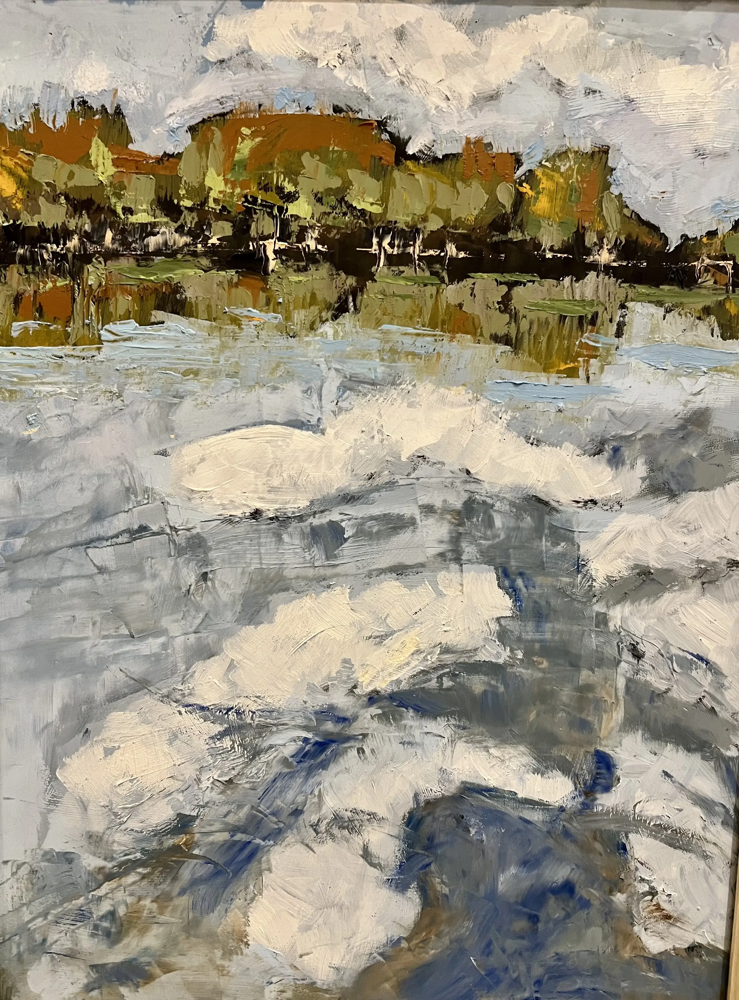

Understanding the natural world through art is my jam.

Greenville, South Carolina-based artist working primarily with oils and acrylics.
I've had a long circular journey back to painting. Most of my work is abstract, yet references nature using texture, line, and color to imply depth. After a formal education in fine art, I came to designing landscapes for many years. Each design began free of preconceptions and open to possibilities. I wanted to create a whole outdoor experience by manipulating shape, color and form. That is also how I begin each painting - no preconceptions. I push and pull the medium to create spaces with color and light, texture and form. I don't find peace when painting until I work through the process of how a particular work will achieve depth, clarity, and a resolution of form.
My circular journey also meandered through the influence of other artists and important gardens. While initially inspired by the paintings and gardens of the impressionists, I later came to better appreciate how the interaction of interesting lines and shapes create an experience.
If you would like to purchase or commission a painting, or just learn more about my work, please e-mail me:
maryjofranks@gmail.com
mary jo studio art
Mary Jo Franks
The Lake of Tupelo Honey
Medium: Oil on panel
Size: 12 x 16